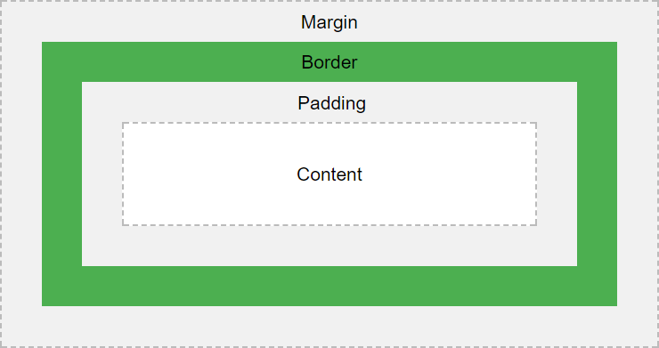

Introduction
The CSS box model consists of margins, borders, padding, and content.
The most intricate aspect of the box model is the border, which has a wide variety of attributes that can be set, including the width, style, color, radius, and image, and all of those settings can be set individually per edge. Additionally, the border can be further decorated with outlines and shadows. This gives the designer a huge variety of creative options to consider.
In this article we consider the core CSS properties that affect the box size and visible appearance. It covers margins, padding, borders, outlines, box shadows, and content sizing. It does not cover other ancillary properties that affect the entire appearance of the box and its content, such as fonts, text styling, colors, transforms, etc.
Web Resources
Visual Depiction

Box Model Properties
| CSS Property | Description | ||||||||||||||
|---|---|---|---|---|---|---|---|---|---|---|---|---|---|---|---|
| Margins | Margins are used to push the box border away from the surrounding content | ||||||||||||||
margin‑top: <value>; |
The top margin | ||||||||||||||
margin‑left: <value>; |
The left margin | ||||||||||||||
margin‑bottom: <value>; |
The bottom margin | ||||||||||||||
margin‑right: <value>; |
The right margin | ||||||||||||||
| Margin Shortcuts | Specify all margins in a single setting | ||||||||||||||
margin: <top> <right> <bottom> <left>; |
Since all 4 values are specified, the values are assigned starting with the top and proceeding clockwise around the box. | ||||||||||||||
margin: <top> <right‑and‑left> <bottom>; |
Since the left margin value was omitted, the second value is used for both left and right. | ||||||||||||||
margin: <top‑and‑bottom> <right‑and‑left>; |
Since only two values are specified, the first value is used for the top and bottom, and the second value is used for right and left. | ||||||||||||||
margin: <value>; |
Since only one value is specified, the same value is used for all 4 margin settings. | ||||||||||||||
| Padding | Padding pushes the content away from the box border. | ||||||||||||||
padding‑top: <value>; |
The top padding | ||||||||||||||
padding‑left: <value>; |
The left padding | ||||||||||||||
padding‑bottom: <value>; |
The bottom padding | ||||||||||||||
padding‑right: <value>; |
The right padding | ||||||||||||||
| Padding Shortcuts | Specify all paddings in a single setting | ||||||||||||||
padding: <top> <right> <bottom> <left>; |
Set paddings with a single setting in a clockwise fashion. | ||||||||||||||
padding: <top> <right‑and‑left> <bottom>; |
" | ||||||||||||||
padding: <top‑and‑bottom> <right‑and‑left>; |
" | ||||||||||||||
padding: <value>; |
" | ||||||||||||||
| Border Widths | The border width specifies the thickness of the border on each side | ||||||||||||||
border‑top‑width: <value>; |
The top border width | ||||||||||||||
border‑left‑width: <value>; |
The left border width | ||||||||||||||
border‑bottom‑width: <value>; |
The bottom border width | ||||||||||||||
border‑right‑width: <value>; |
The right border width | ||||||||||||||
| Border Width Shortcuts | Specify all border widths in a single setting | ||||||||||||||
border‑width: <top> <right> <bottom> <left>; |
Set border widths with a single setting in a clockwise fashion. | ||||||||||||||
border‑width: <top> <right‑and‑left> <bottom>; |
" | ||||||||||||||
border‑width: <top‑and‑bottom> <right‑and‑left>; |
" | ||||||||||||||
border‑width: <value>; |
" | ||||||||||||||
| Border Style | The border styles specifies how the borders are drawn | ||||||||||||||
border‑top‑style: <value>; |
The top border style |
|
|||||||||||||
border‑left‑style: <value>; |
The left border style | ||||||||||||||
border‑bottom‑style: <value>; |
The bottom border style | ||||||||||||||
border‑right‑style: <value>; |
The right border style | ||||||||||||||
| Border Style Shortcuts | Specify all border styles in a single setting | ||||||||||||||
border‑style: <top> <right> <bottom> <left>; |
Set border styles with a single setting in a clockwise fashion. | ||||||||||||||
border‑style: <top> <right‑and‑left> <bottom>; |
" | ||||||||||||||
border‑style: <top‑and‑bottom> <right‑and‑left>; |
" | ||||||||||||||
border‑style: <value>; |
" | ||||||||||||||
| Border Colors | The border color can be set individually for each side | ||||||||||||||
border‑top‑color: <value>; |
The top border color | ||||||||||||||
border‑left‑color: <value>; |
The left border color | ||||||||||||||
border‑bottom‑color: <value>; |
The bottom border color | ||||||||||||||
border‑right‑color: <value>; |
The right border color | ||||||||||||||
| Border Color Shortcuts | Specify all border colors in a single setting | ||||||||||||||
border‑color: <top> <right> <bottom> <left>; |
Set border colors with a single setting in a clockwise fashion. | ||||||||||||||
border‑color: <top> <right‑and‑left> <bottom>; |
" | ||||||||||||||
border‑color: <top‑and‑bottom> <right‑and‑left>; |
" | ||||||||||||||
border‑color: <value>; |
" | ||||||||||||||
| Border Radiuses | Border radius properties allow for rounded corders | ||||||||||||||
border‑top‑left‑radius: <horiz‑radius> [ <vert‑radius> ]; |
Sets the top-left radius in units or percentages. More details | ||||||||||||||
border‑top‑right‑radius: <horiz‑radius> [ <vert‑radius> ]; |
Sets the top-right radius in units or percentages. More details | ||||||||||||||
border‑bottom‑left‑radius: <horiz‑radius> [ <vert‑radius> ]; |
Sets the bottom-left radius in units or percentages. More details | ||||||||||||||
border‑bottom‑right‑radius: <horiz‑radius> [ <vert‑radius> ]; |
Sets the bottom-right radius in units or percentages. More details | ||||||||||||||
| Border Radius Shortcuts | Specify all border radiuses in a single setting | ||||||||||||||
border‑radius: <1‑to‑4‑values> [ / <1‑to‑4‑values> ]; |
Set border radiuses with a single setting in a clockwise fashion. Similar to all the other shortcuts, except now we are going by corners instead of sides, starting with the top-left corner. More details Values can be a unit value or a percentage. The specified values define the radii of two quarter elipses. The first value is the horizontal radius. The second value, if specified, is the vertical radius. If it is omitted, the value is copied from the horizontal radius, and thus the border becomes a quarter-circle. In this shorthand notations, the first group of up to 4 values defines the horizontal radius, which are applied clockwise around box (sort of). The specify a second set of values (for the vertical radius), insert a slash and then the next set of up to 4 values. Thus, the box borders in their entirety consist of 8 separate values, giving lots of creative flexibility in defining box boundaries. One can create some fairly strange shapes use border radiuses. |
||||||||||||||
| Border Image | Instead of a color, you can provide an image to use as the border | ||||||||||||||
border‑image‑outset: <1‑to‑4‑values>; |
Specifies the amount by which the border image area extends beyond the border box. Value can be a length (with a unit specifier) or a plain number. When specified as a number, represents a multiple of the corresponding border width. As with all prior shortcut settings above, the settings can be applied individually to each side by specifying 1 to 4 values that go clockwise around the border. |
||||||||||||||
border‑image‑repeat: <1‑to‑4‑values>; |
Specifies how the border images are scaled and tiled.
Possible values are: As per usual, specify 1 to 4 values in a clockwise fashion. |
||||||||||||||
border‑image‑slice: <1‑to‑4‑values>; |
Specifies how to slice the image specified by the border image source. The image is sliced into 9 pieces: the four corners, the four edges, and the middle. As per usual, specify 1 to 4 values in a clockwise fashion. |
||||||||||||||
border‑image‑source: url(<image‑location‑url>); |
Specifies the source of the border image. Note: Unlike the other image settings, you do not specify up to four values. You only specify one image. Presumably you're supposed to use the slice property to designate how to utilize the one image that is provided. |
||||||||||||||
border‑image‑width: <1‑to‑4‑values>; |
Specifies the width of the border image. As per usual, specify 1 to 4 values in a clockwise fashion. |
||||||||||||||
| Border Image Shortcut | Specify the border image parameters in a single setting | ||||||||||||||
border‑image: source [slice] [width] [outset] [repeat]; |
If you don't mind using the same slice, width, outset, and repeat settings for all four edges, you can use this shortcut parameter to set them. Otherwise, use the individual image settings to set them for each edge as-needed. |
||||||||||||||
| Border Shortcut | Specify basic border properties in a single setting | ||||||||||||||
border: [<width>] [<style>] [<color>]; |
If you want to use the same settings for all 4 edges of the border, you can use the border shortcut
to set the width, style, and color of the border in one setting. More details.
|
||||||||||||||
| Outlines | Outlines are used to highlight a border, but do not take up extra space | ||||||||||||||
| About Outlines |
Outlines are an often overlooked aspect of the box model. This could be because outlines do not take up space or change the dimension of the box (presumably outlines encroach into the box's margin). Outline are often used to highlight the focus of input elements. For example, the Chrome browser by default sets a blue outline around form input elements when they have focus. Unlike margins, padding, and border settings, the same outline values must be used for all edges of the outline. |
||||||||||||||
outline‑color: <value>; |
Specifies the color of the outline. More details. | ||||||||||||||
outline‑offset: <value>; |
The distance between the border and the outline. More details. | ||||||||||||||
outline‑style: <value>; |
The style of the outline. More details. | ||||||||||||||
outline‑width: <value>; |
The width of the outline. More details. | ||||||||||||||
| Outline Shortcut | Specify all outline properties in a single setting | ||||||||||||||
outline: [<color>] [<style>] [<width>]; |
The color, style, and width of the outline can be set in a single setting with a shortcut. The outline offset must be set separately. More details. | ||||||||||||||
| Box Shadows | Draws one or more shadows to give the box a 3-dimensional look | ||||||||||||||
box‑shadow: <settings>; |
Sets the box shadow properties. Box shadow properties can be quite intricate. More details. | ||||||||||||||
| Content Height and Width | How the box content is sized | ||||||||||||||
height: <value>; |
If
If
Heights and widths are ignored for The value can be a unit value or a percentage. When expressed as a percentage, it is relative to the size of the parent box. |
||||||||||||||
width: <value>; |
Sets the width of the box, using the same algorithm as the height (see above). | ||||||||||||||
box‑sizing: content‑box; |
The default sizing method for the box. The height and width are applied to the content only, and do not include the margin, padding, or border. | ||||||||||||||
box‑sizing: border‑box; |
The height and width are applied to the total size of the content + padding + border, but does not include the margin. | ||||||||||||||